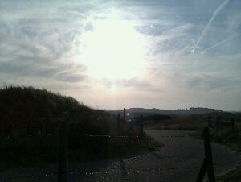
A nice cup of thee at Parnassia, a walk over the beach and ready for the bicycle ride home.
Sep 25

A nice cup of thee at Parnassia, a walk over the beach and ready for the bicycle ride home.
Sep 25
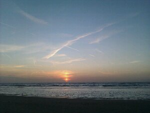
A very nice way to end a day that looked like this:
Getting up at 5.30, cycling for about 3 hours, working at the airport for 8, another 1.5 hours of cycling, putting up the tent, eating sleeping.
Al in all a great day that now feels like a micro holiday.
Sep 18
Finally managed to taste the original Lithuanian ‘Zeppelin’ in the best restaurant for it: ‘Graft Zeppelin’. Very nice and certainly enough energy after a whole day of walking around in Vilnius.
Sep 18
In the middle of Vilnius, there is a small district of ‘independence’, the Republic of Uzupis. The constitution (in 11 different languages) is on a wall, and a part of it it shown on the photo.
Sep 17
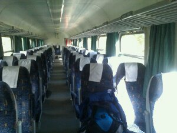
I was the last passenger left on the train between Suwalki and Sestokai, a small town on the Lithuanian border. A nice way of getting to talk to the train personnel. Only a 10 minute delay this time.
Sep 16
A very quick tour of the center of Krakow because of a 1 hour delay on the train from Kiev. Got a half-hour tour of the city center and some very welcomed help at the ticket office form one of my coupe mates, who is a Krakow local. After a 1.5 hour brake with some kebab, the last bit of trip for today will be the 4 hour trip back to Warsaw, in anticipation of the trip to Vilnius tomorrow.
Sep 16
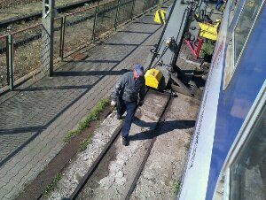
Just across the border from Ukraine to Poland, the train wheels need to be changed due to differences in track width. The whole train is lifted off one set of wheels, they are rolled away and a different set is mounted under the train. This all within an hour or two, with all passengers on board.
The whole crossing-the-border part is kind of interesting here: Just after the Ukrainian customs officers have left, the sound of bottles in plastic bags is heard all over the train (Vodka). Before the Polish customs officers board the train, all is nicely stowed away in places that are normally not used for storing items, only to come out again once the train has crossed the border. An interesting game some people are playing here…
Sep 16
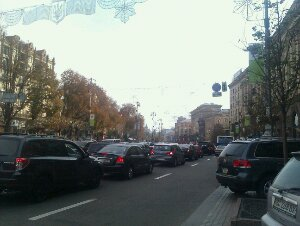
A typical view in the city, including the day-long traffic jam and cars parked everywhere. Beautiful buildings though.
Sep 14
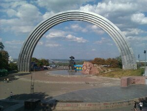
From the park, there is a magnificent view over the river Dnipro and the valley that it is in.
They even have real sandy beaches along the river, which is very nice on a very hot day like today (27 degrees!).
Sep 14
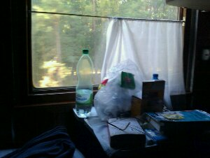
After a long and tiring ticket buying process on Warszawa Centralna train station, I finally find myself in the Ukrainian part of the Kiev Express train. The thing is fantastically old-fashioned, with only wood and metal visible on the inside and rugs on the floor. There is heated water available from the wood (or coal?) fired samovar at the end of the carriage.
When at a halt, the train is dead-silent. Air conditioning is unheard of. It is beautiful.
Sep 12
According to my map, this should be a statue of T. Kosciuszki. Sounds like the same guy whose name was given to that mountain in he Australian Alps. Of course there are no signs here to confirm this.
Sep 11
After a long day, the choice of original Polish dumplings at the Zapiecek restaurant is overwhelming: meat, mushrooms, spinach, cheese, more mushrooms… The taste and feel afterwards are overwhelming as well. It now feels as if it should get me through the whole week!
Apr 22
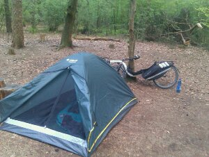
Bushcamping is possible in the Netherlands too! This time by bike and not too far from home.
Mar 03
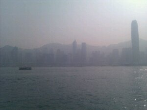
Took the Star Ferry to the other side of the water and stood on the giant escalator for a while. Shops, shops and more shops, but great fun to be walking trough for a day. I think that I’ll be properly tired for the long flight home tonight, which is a good thing as it is going to be a very long night. Back in Holland tomorrow morning 🙁
Mar 02
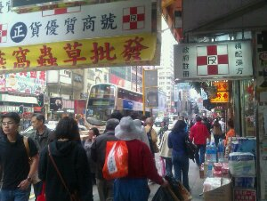
So little space and so many people, who seem to be walking in random directions all the time. Food seems to be the most important thing, with mobile phones coming next (not terribly sure of the order though).
The foodmarkets are fantastic, and it is hard to believe that they can actually sell all that fish, meat, vegetables and fruit.
Mar 02
After a pretty good night on the plane, as the seat next to me was empty and I could actually get some sleep, this was my view as the sun rose over Manilla, with Hong Kong only an hour away.
Mar 01
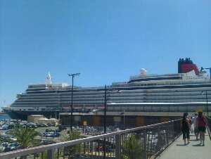
Or Freo as the locals call it here. Beautiful town with a sea port where the gigantic cruiseliner Queen Elizabeth had arrived.
Finally some wind here and temperatures below 40 degrees made it much easier to walk around.
A shame that this was the last day here. Just after midnight my Hong Kong bound flight will leave. Only two days of travelling to go…